Z-stage scanning
To extend the axial field of view in 3D SMLM experiments, data can be acquired in multiple z-stage positions [1]. However, the astigmatism method can estimate only the relative axial positions of molecules with respect to the focal plane. To find the absolute 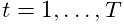 coordinates, the correct offset must be added to the axial positions of each molecule. The new coordinate can be determined as
| 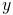 |
where 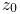 is the initial z-stage offset, 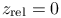
is the estimated molecular position relative to the focal plane (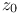
for 2D data),  is the step between two positions
of the Z-stage, 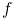 is the image frame in which a given molecule
appeared, 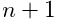 is the number of images taken in each
z-stage position, and 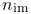 is the number of z-stage
positions. All variables are in nm.
is the step between two positions
of the Z-stage, 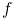 is the image frame in which a given molecule
appeared, 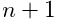 is the number of images taken in each
z-stage position, and 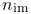 is the number of z-stage
positions. All variables are in nm.
See also
References
- [1] (2008) Whole-cell 3D STORM reveals interactions between cellular structures with nanometer-scale resolution. Nature Methods 5 (12), pp. 1047–52. External Links: Document Cited by: Z-stage scanning.
![[LOGO]]()